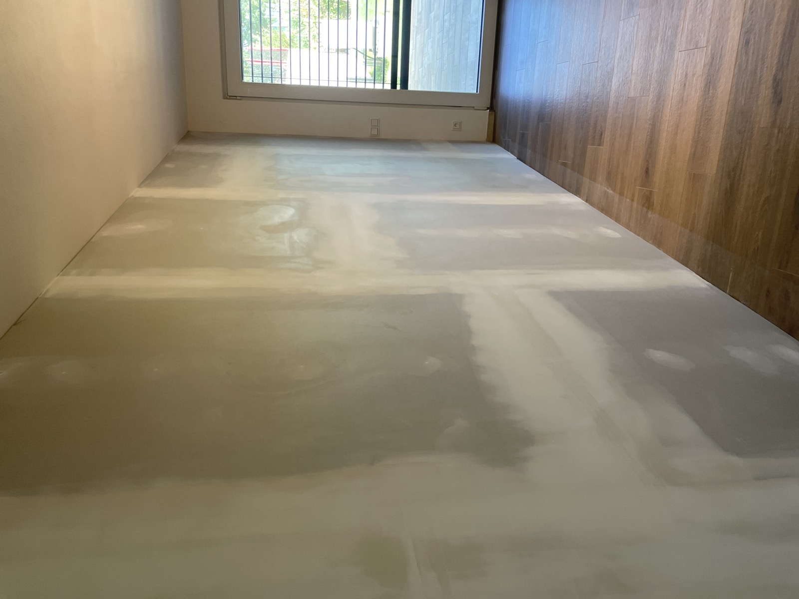
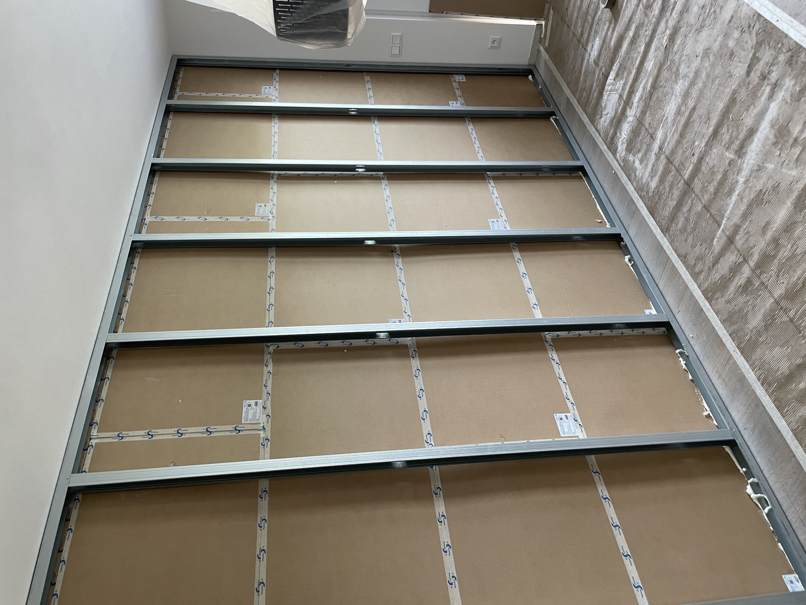
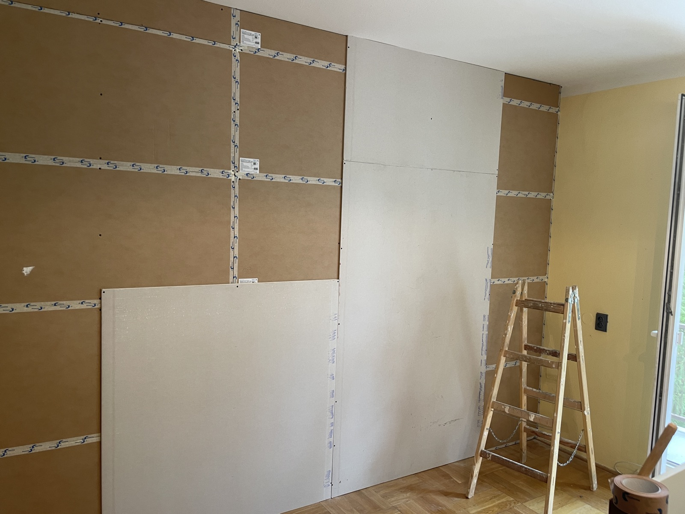
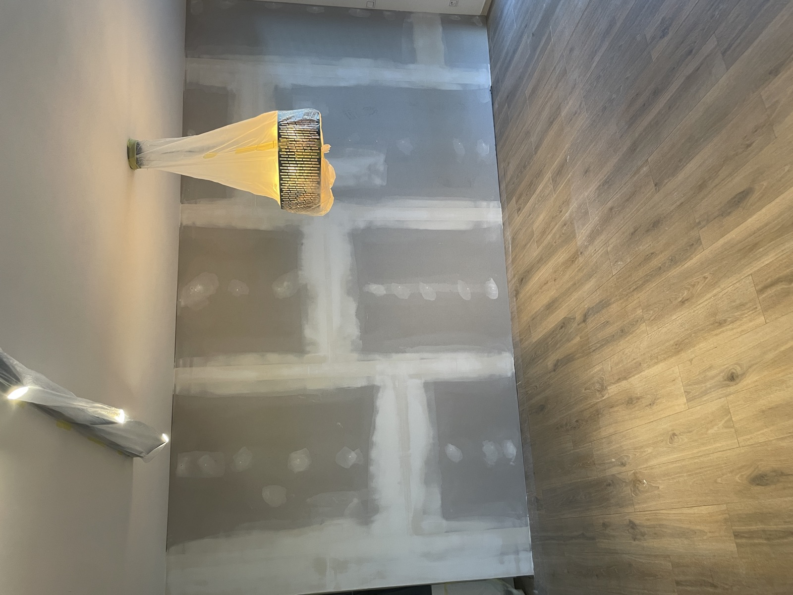

Měření a frekvenční analýza
Přijedeme s kalibrovaným zvukoměrem třídy 1, změříme dobu dozvuku, izolaci stěn (R'w) a identifikujeme dominantní zdroje hluku napříč spektrem 50—5000 Hz.
Měříme, navrhujeme a montujeme zvukové izolace s garantovaným útlumem. Pro byty, kanceláře, gastronomii, studia i průmysl.
Každý projekt začíná měřením, končí protokolem o dosaženém útlumu. Žádné odhady, žádné kompromisy.
Spojujeme stavební inženýrství s akustikou. Každý projekt začíná měřením in‑situ, frekvenční analýzou a výpočtem — teprve potom navrhujeme skladbu. Žádné odhady.
Přijedeme s kalibrovaným zvukoměrem třídy 1, změříme dobu dozvuku, izolaci stěn (R'w) a identifikujeme dominantní zdroje hluku napříč spektrem 50—5000 Hz.
V softwaru Odeon a INSUL spočítáme předpokládaný útlum každé skladby. Dostanete projekt s garantovanou hodnotou útlumu před objednáním materiálu.
Žádní subdodavatelé. Naši montéři jsou certifikovaní výrobci materiálů (Rockwool, Knauf, Vicoustic). Pracujeme po etapách, beze stop.
Po dokončení provádíme kontrolní měření a předáme vám protokol o dosaženém útlumu. Pokud nebudou hodnoty sedět, dopracujeme zdarma.
Pracujeme jen s certifikovanými systémy ověřenými vlastním měřením. Každý produkt má dohledatelné technické listy a hodnoty útlumu.
Celý katalog →Sendvičový panel s minerální vlnou a perforovaným MDF povrchem. Pohlcuje široké pásmo i nízké frekvence.
Volně zavěšené ostrovy z melaminové pěny pro snížení dozvuku v open spacech a restauracích.
Plovoucí podlaha s pružnými podložkami. Eliminuje kročejový hluk mezi patry a vibrace strojoven.
Těžká bariérová fólie s minerální vlnou pro tlumení potrubí, kompresorů a vzduchotechnických jednotek.
Quadratic Residue Diffusor sedmého řádu. Rozptyluje zvuk v nahrávacích studiích a mastering místnostech.
Rohový bass trap z měkčené minerální vlny a perforovaného plechu pro studia a posluchové místnosti.
Vlevo: hlučná restaurace bez akustiky — dozvuk 1,8 s, hluk z reproduktorů + hovorů. Vpravo: po instalaci stropních ostrovů a stěnových panelů.
Open kitchen koncept s 80 místy. Před úpravou si hosté museli křičet od stolu ke stolu. 36 stropních ostrovů + obklady stěn vyřešily problém za 6 dní.
Od luxusních bytů po průmyslové strojovny. Každá realizace má svůj akustický protokol.
Celá galerie (84) →



79 hodnocení na Google · průměr 4,9★ · NPS skóre 76
Akustický audit nám otevřel oči — slyšeli jsme od souseda všechno. Po výměně mezibytové stěny je doma poprvé klid. Hodnoty útlumu sedí přesně na projekt.
Akustika otevřeného studia byla noční můra — všechno se odráželo. Návrh byl konkrétní, montáž rychlá, výsledek měřitelný. RT60 jsme srazili z 1,2 na 0,3 sekundy.
Profesionální od první návštěvy. Diagnostika ukázala, kde je skutečný problém — netěsnosti VZT. Místo zbytečné rekonstrukce stěn jsme vyřešili strop a potrubí.
Restaurace s 80 místy bez akustiky byla peklo. TICHÝ DOMOV přijel, změřil, navrhl, smontoval — 6 dní. Hosté chválí, personál se nepřekřikuje. Návratnost dokonalá.
Stručné odpovědi na to, co nejčastěji slýcháme. Pokud nenajdete svou otázku, napište nám.
R'w je vážená neprůzvučnost — kolik decibelů konstrukce odhluční mezi dvěma místnostmi. NRC (Noise Reduction Coefficient) měří, kolik zvuku panel pohltí v rozsahu 250–2000 Hz. Hodnoty 0–1, kde 1 = pohltí vše. Více v glosáři.
Záleží na cíli a frekvenci hluku. Pro orientaci: stěnové předstěny mezi byty od 4 500 Kč/m² včetně montáže. Bezplatný akustický audit s konkrétní kalkulací uděláme do 48 hodin od poptávky.
Předstěna typicky 50–80 mm. Stropní podhled 60–120 mm. Volně zavěšené ostrovy 40 mm + závěs. Pro malé místnosti máme tenké high‑end systémy 30 mm s útlumem až 38 dB.
Audit 1 den. Projekt 3–5 dní. Realizace: byt 3–7 dní, restaurace 5–10 dní, kanceláře 7–14 dní. Pracujeme po etapách bez nutnosti opustit prostor.
Ano. Po realizaci provedeme kontrolní měření a předáme protokol. Pokud naměřené hodnoty nesedí na projekt, dopracujeme zdarma. Záruka 10 let na funkčnost systému.
Hlavní oblast: Praha a Středočeský kraj. Větší projekty po celé ČR + Slovensko. Pro Moravu máme partnerský tým v Brně.
Pošlete nám pár vět o vašem prostoru a problému. Do 24 hodin se ozveme s návrhem dalšího postupu — typicky bezplatným měřením na místě.